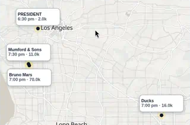
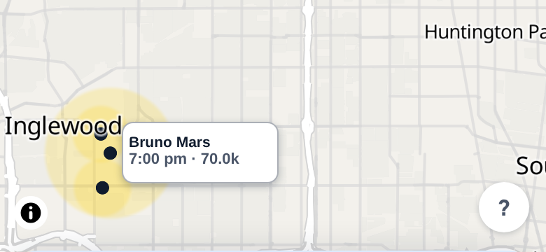

06 · Neighbor chips in Inglewood (SoFi, Kia Forum, Intuit Dome)
Oct 7: the Bruno Mars (SoFi) and Mumford & Sons (Kia Forum) chips stack on top of each other, their dots touch, and they swap places when you pick one. Oct 3 is worse. Inglewood has three dots but only the Bruno Mars chip; Klangkuenstler and aespa are hidden with no sign that anything's missing. Map labeling practice (Mapbox/Google declutter, callout leader lines): when labels collide, move them along a short leader line or show a count. Never drop them silently.
Current
02-map-la.png (Oct 7) · live Oct 3, 390 pt
Oct 7 (02)

Oct 3 (live): 3 Inglewood dots, 1 chip

Chips 2 and 3 in Inglewood are hidden on purpose by the collision code (they're in the page with a hidden class). Both had Heavy friction on the Oct 3 date page (13), so the map hides exactly the events the night was about.
Option 1 · Fan out with short leader lines
All chips stay; offsets go east (the west side is the coast)
Dodgers (NLDS G1)
1:08 pm · 50.2k
Ken Carson
7:00 pm · 35.0k
USC
4:30 pm · 59.1k
Klangkuenstler
7:00 pm · 17.5k
Bruno Mars
7:00 pm · 70.0k
aespa
8:00 pm · 18.0k
aespa crowd example
Every event keeps its fixed 112×44 chip. Neighbors fan out in a tidy column toward open space (inland here), each with a thin line back to its own dot, in north-to-south order like the venues. Positions stay put when you select one, so nothing jumps. This is the lock's "short geography-aware offset", plus the leader line. Trade-off: in really dense spots (Downtown, 4+ events) the column gets long.
Option 2 · Biggest crowd + a "+2" count
One chip with a count; tap fans out like Option 1
Dodgers (NLDS G1)
1:08 pm · 50.2k
Ken Carson
7:00 pm · 35.0k
USC
4:30 pm · 59.1k
Bruno Mars
7:00 pm · 70.0k
+2
The chip stays clean and the "+2" says something's hiding. The biggest crowd at that spot gets the chip. Tap the chip or the +2 and the group fans out (Option 1 layout), and the list sheet always shows all three. Fewest chips on screen. Lock note: the +2 badge is a new mark on the chip lock, so she'd need to OK it. Trade-off: it still hides two Heavy-friction events until you tap.